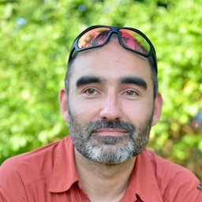

Kontakty
E-mail | LinkedIn | GitHub | HackerRank | Garmin
Odbornost
Programování a konzultace mobilních aplikací pro platformu iOS v jazycích Swift a Objective-C s UI frameworky SwiftUI i UIKit. Okrajová zkušenost s watchOS a tvOS.
Automatizované testování pro zvyšování sebevědomí při refactoringu a vydávání nových verzí. Unit testing pro jednotlivé komponenty, UI testing pro celou aplikaci.
Snižování technologického dluhu starších aplikací a jejich povýšení na aktuální verze SDK.
Audit bezpečnosti z pohledu ukládání dat a síťové komunikace s API. Audit použitelnosti z hlediska předvídatelnosti a konzistence uživatelského rozhraní.
Praxe
Tvorba mobilních aplikací od roku 2012, předtím webových od roku 2005.
Zkušenosti z mnoha rolí jako nezávislý vývojář, vedoucí programátor v německém studiu All Shapes a v americkém startupu Unapp (včetně dvouměsíčního bootstrapu v New Yorku) nebo jako spoluzakladatel a vývojář jazykových aplikací, které se v App Store prodávají od roku 2013.
Konkrétní projekty a doporučení zákazníků viz LinkedIn profil.
Vzdělání
V roce 2010 zisk titulu inženýr na Fakultě informačních technologií VUT v Brně, obor Informační systémy. Diplomová práce GIS aplikace pro Windows Mobile napsaná v C#.
Jazyky
Každodenní komunikace v angličtině - práce v distribuovaných mezinárodních týmech.
Záliby
Celý rok běhání a čtení e-knih na Kindlu, v létě jízda na kole, v zimě šlapání na skialpech.